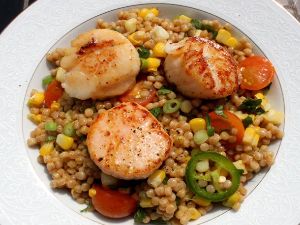

Israeli Couscous & Scallops
Home
Ragu alla Bolognese
Chocolate Chip Cookies

colorful medley of seasoned Israeli couscous tossed with sweet corn, halved cherry tomatoes, crisp spring onions, fresh cilantro, and a hint of jalapeño for gentle heat. Topped with golden-seared scallops, this dish is a vibrant balance of sweetness, spice, and herbaceous freshness—perfectly layered for a light yet satisfying bite.
Ingredients
- 1 1/4 cups low-sodium chicken or vegetable broth
- 1 cup Israeli (Pearl) Couscous
- 1 ear corn, kernels removed
- Kosher salt and freshly ground black pepper
- 3 tablespoosn olive oil, divided
- 2 tablespoons lemon juice
- 2 tablespoons thinly sliced scallions, white and light green only
- 1 cup cherry tomatoes, halved
- 1/2 jalapeno, thinly sliced
- 1/2 cup roughly chopped cilantro
- 6 scallops
Directions
- Add broth to skillet and bring to a boil.
- Add couscous, corn, salt and pepper. Stir to combine.
- Reduce heat to bare simmer and cover.
- Cook for 8 to minutes, stirring occasionally, until liquid is absorbed.
- Add 1 tbsp of oil and the lemon juice, stir, and cover and cook for an additional minute.
- Put couscous in a serving bowl and combine with scallions, tomatoes, jalapeno, and cilantro.
- Dry scallops and season generously with salt and pepper.
- Heat 2 tablespoons of olive oil over medium-high heat until barely smoking.
- Add the scallops and cook until golden brown on first side, 2 to 3 minutes.
- Flip and cook an additional 2 minutes longer until barely cooked through.
- Place scallops on top of couscous and serve immediately.